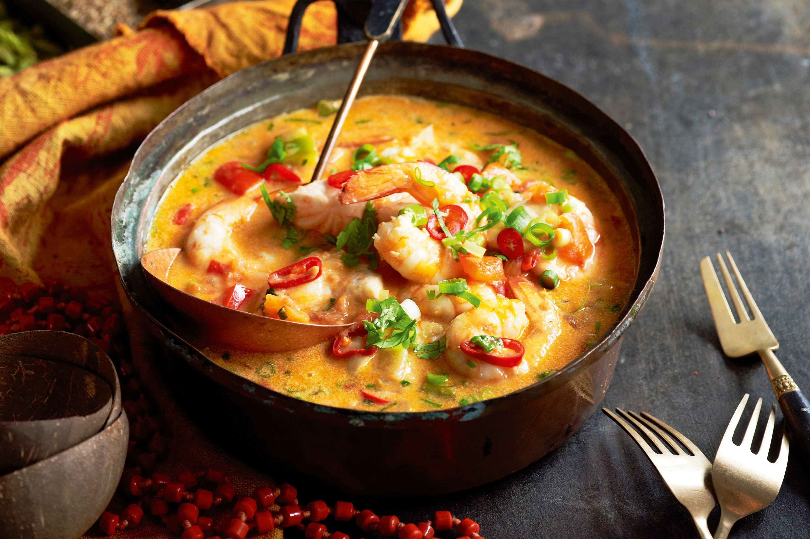

Mac Muqueca

A moqueca, muqueca ou poqueca é um cozido, geralmente de peixe, típico da culinária brasileira e da culinária angolana. No Brasil, é prato típico dos estados do Pará, da Bahia e do Espírito Santo. Pode ser preparada com peixe, mariscos, crustáceos, galinha ou ovos de galinha.
O Mec Muqueca foi inentado para homenagear essas duas relações culturais, entre a Africa e o Brasil

- 1 kg de peixe cação em postas
- 1 pimentão verde em rodelas
- 1 pimentão vermelho em rodelas
- 1 pimentão amarelo em rodelas
- 1 tomate em rodelas
- 1 cebola em rodelas
- 1 fio de azeite de oliva
- molho shoyu
- vinagre (ou limão)
- açafrão
- sal
- pimenta-do-reino
- 1 maço de coentro (ou cheiro verde) e cebolinha
- 1 tablete de caldo de peixe (ou camarão ou frango)
- 1 vidro pequeno que leite de coco (200 ml)